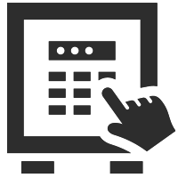
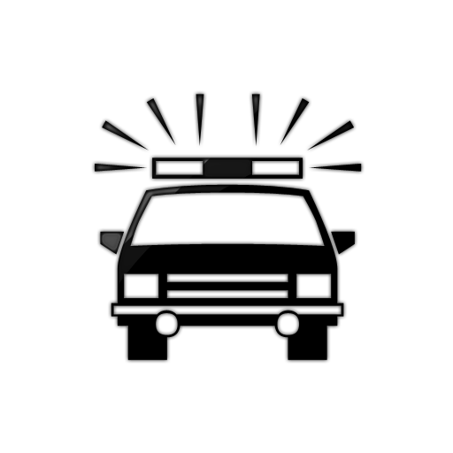

SEGURANÇA EM PRIMEIRO LUGAR
Contamos com uma equipe especializada de vigias, supervisores e gestores, treinados para fazer a segurança preventiva patrimonial, bem como de todo o público envolvido, gerenciando situações previsíveis e adotando medidas de contenção em situações de crise, priorizando o bem estar de nossos clientes.
QUALIDADE NO QUE FAZ
Focado na qualidade de seus serviços, a SERTTYB mantém como filosofia
empresarial, o trinômio da excelência trabalhista
Homem
Equipamento
Treinamento
assim sendo, contrata seus colaboradores através de criterioso processo seletivo,
tendo como peça principal a conduta ilibada no perfil do candidato,
disponibiliza à suas equipes todos os meios necessários para o desenvolvimento
das funções e por último, mas não menos importante, foca o treinamento
inicial para cada função e suas reciclagens periódicas.
TIPOS DE TERCEIRIZAÇÃO E SEUS BENEFÍCIOS
Especialista na terceirização de profissionais na área de:
Controle de acesso
Vigía
Rondista
Fiscal de Piso
Ascensorista
Recepção
Zeladoria
Limpeza
Conservação
Manutenção
de condomínios e empresas de pequeno, médio e grande porte.
Oferecendo soluções personalizadas para cada modalidade de serviço,
com enorme vantagem de custo/benefício.
PLANEJAMENTO, APOIO E FISCALIZAÇÃO
Para que um serviço atinja sua excelência, deve primeiramente ser planejado, com indicação dos métodos que irão pautar a execução dos trabalhos. Em ato contínuo há a necessidade de total apoio por parte dos gestores aos executores, incutindo treinamentos e meios. Finalizando esse ciclo, se faz necessário a fiscalização presencial para necessárias intervenções que venham a surgir e garantia de bons resultados.
 CONTROLE DE PORTARIA/ACESSO
O serviço executado em uma portaria está diretamente ligado à Segurança Preventiva, pois são os profissionais que ali trabalham, com os meios e treinamentos que lhes são disponibilizados, que proíbem a entrada de pessoas indesejáveis, minimizam a possibilidade de ações delituosas, detectam invasores e acionam apoio externo. Garantindo assim a merecida tranquilidade aos ambientes que nos são confiados.
 RONDAS
Nossa equipe realiza serviços ostensivo/preventivo de rondas, com auxílio de equipamentos de ronda eletrônica. bem como sistema de botão de pânico, rádio para comunicação, viatura e apoio externo, sempre por profissionais qualificados e bem treinados, propiciando segurança e auxílio em tempo real a nossos clientes.
 ASSESSORIA EM SEGURANÇA
ASSESSORIA EM SEGURANÇA
Trabalho executado por profissionais com larga experiência na área de segurança preventiva e remediadora, o qual visa criar uma estrutura menos favorável a ilícitos penais, planejando métodos para minimizar a possibilidade de que ocorram roubos, furtos, vandalismos e outros. Mantém o apoio permanente aos colaboradores locais, bem como a orientação nos planejamentos dos membros gestores. Essa modalidade não está vinculada a terceirização de mão de obra.
ANÁLISE SWOT
Trabalho voltado a detectar os pontos fortes e fracos, as oportunidades e as ameaças, tanto internas como externas de uma organização, visando através dessa análise, priorizar intervenções na segurança preventiva e deixar fixado procedimentos em situações de crise, agindo assim de forma planejada, minimizando impactos negativos. Esse trabalho é registrado em livro e mídia, sendo entregue ao cliente para servir de alicerce para os gestores e independe da terceirização de mão de obra